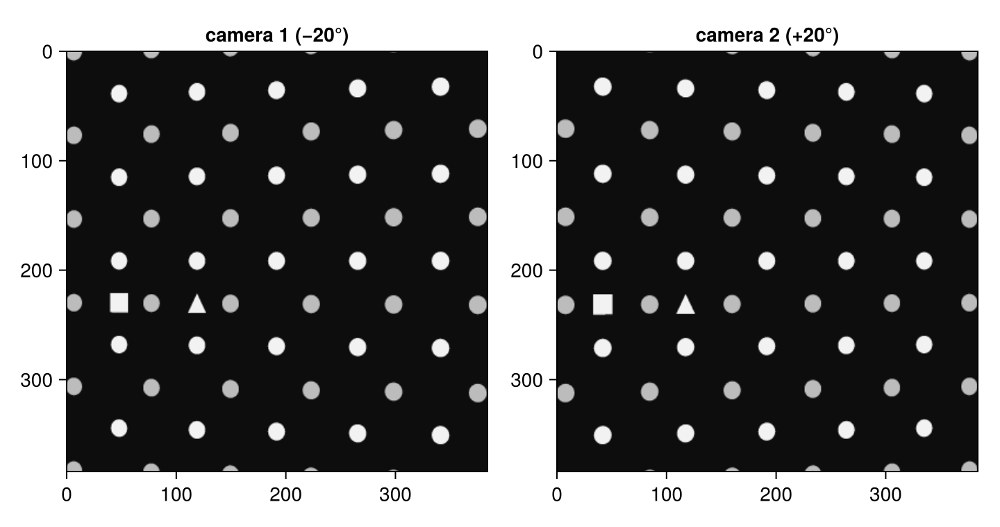
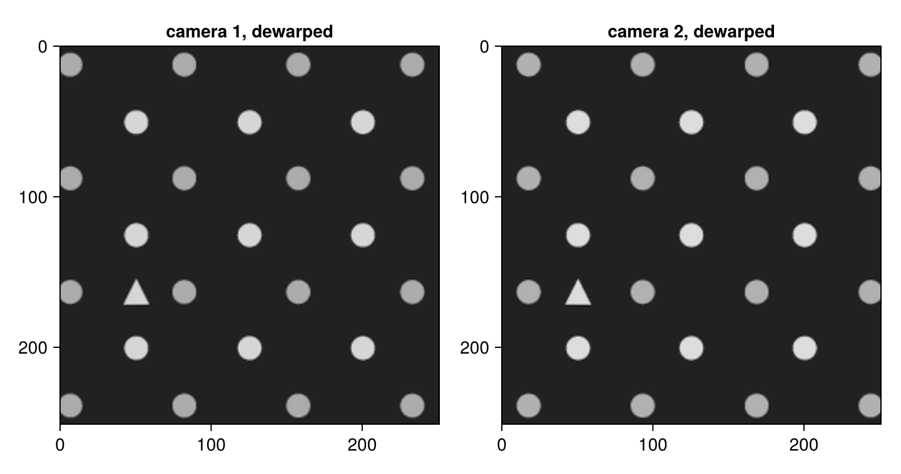
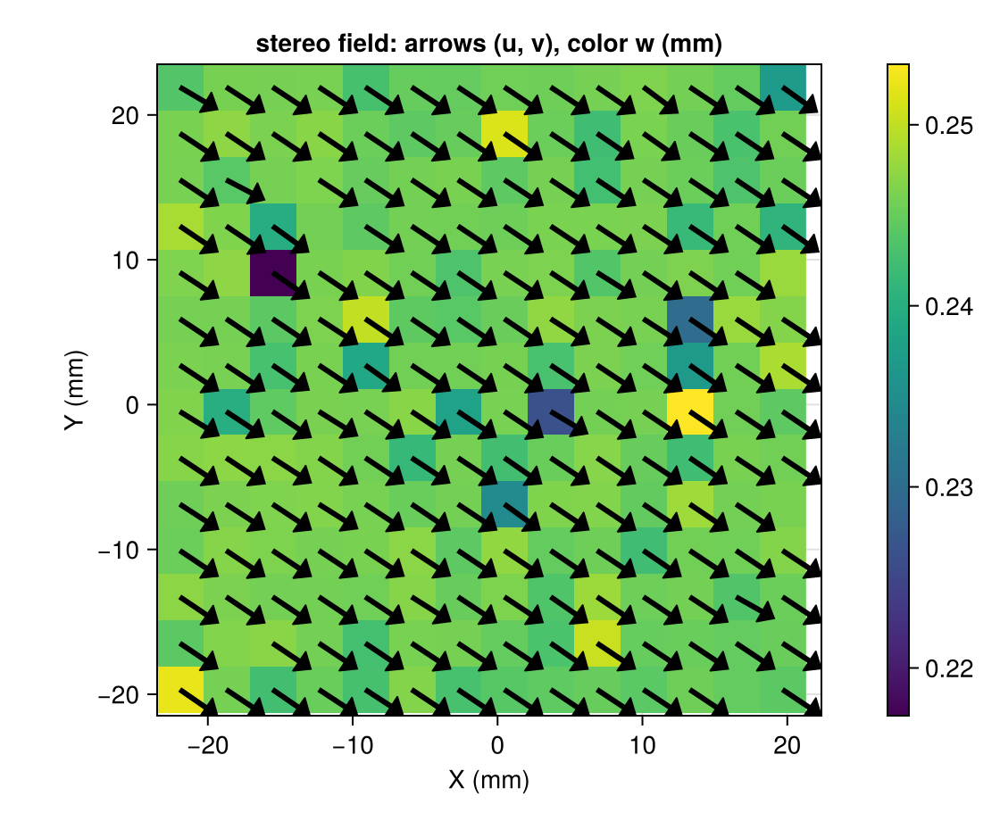

Stereo PIV end to end
Two cameras viewing the light sheet from different angles measure all three velocity components. This tutorial walks the entire stereo chain on a synthetic rig — calibration plate to three-component vector field — so every step has a known ground truth:
- photograph a calibration target (
render_calibration_target), - detect and index its dots (
detect_calibration_grid), - fit camera models (
calibrate_camera), - dewarp onto a common world plane (
ImageDewarper), - correct the plate-to-sheet misalignment (
self_calibrate), - reconstruct $(u, v, w)$ (
run_piv_stereo).
The concepts are explained in Stereo geometry and self-calibration; the real-data version of this workflow is the stereo-rig how-to.
A synthetic stereo rig
The "true" optics: two pinhole cameras in a standard stereo arrangement, yawed ±20° about the vertical axis, looking at the world origin from 500 mm. In a real experiment these exist as hardware; here they render our images and provide the ground truth.
using Hammerhead
using Random, LinearAlgebra
using Statistics: median
image_size = (384, 384)
function make_camera(yaw_deg; f = 2600.0, cx = 192.0, cy = 192.0, dist = 500.0)
th = deg2rad(yaw_deg)
R = [cos(th) 0.0 -sin(th); 0.0 1.0 0.0; sin(th) 0.0 cos(th)]
C = R' * [0.0, 0.0, -dist] # camera center in world coordinates
K = [f 0.0 cx; 0.0 -f cy; 0.0 0.0 1.0] # -f: world +Y points up in the image
return PinholeCamera(K, R, -R * C)
end
true_cams = (make_camera(-20.0), make_camera(20.0))(PinholeCamera(P = [2377.5 0.0 1069.7 96000.0; -65.668 -2600.0 180.42 96000.0; -0.34202 0.0 0.93969 500.0]), PinholeCamera(P = [2508.9 0.0 -708.83 96000.0; 65.668 -2600.0 180.42 96000.0; 0.34202 0.0 0.93969 500.0]))Photograph the calibration target
The target is a LaVision-style two-level dot plate: dots every 15 mm on each level, the back level 3 mm behind the front, plus a filled square marker that anchors the origin and a triangle for orientation diagnostics. We image it at three traverse positions (z = −3, 0, +3 mm), as one would with a real traverse:
zs = [-3.0, 0.0, 3.0]
target_kwargs = (spacing = 15.0, two_level = true, level_separation = 3.0,
marker_square = (-30.0, -7.5), marker_triangle = (-15.0, -7.5))
plates = [[render_calibration_target(cam, image_size; z, target_kwargs...)
for z in zs] for cam in true_cams]
using CairoMakie
let
fig = Figure(size = (720, 380))
for (i, title) in enumerate(("camera 1 (−20°)", "camera 2 (+20°)"))
ax = Axis(fig[1, i]; title, yreversed = true, aspect = DataAspect())
image!(ax, plates[i][2]'; colormap = :grays)
end
fig
end
The perspective differs between the cameras — that difference is what encodes the out-of-plane component.
Detect the grid and calibrate
detect_calibration_grid finds the dots (subpixel intensity-weighted centroids), indexes them on the lattice, and anchors the world frame to the square marker. origin_offset = (30.0, 7.5) says "the origin dot sits 30 mm right of and 7.5 mm above the marker" — the same convention as PIV Challenge case 4E. Both cameras therefore agree on the world frame. One (default Soloff) model per camera:
grids = map(plates) do cam_plates
[detect_calibration_grid(img; spacing = 15.0,
two_level = true, level_separation = 3.0,
origin_offset = (30.0, 7.5))
for img in cam_plates]
end
cams = [calibrate_camera(g, zs) for g in grids]
cams[1]SoloffCamera(19-term Soloff polynomial, world center = [0.0, 0.0, -1.5], scale = [37.5, 30.0, 4.5])Always check the fit. On these noise-free synthetic plates the residual is tiny; on real plates expect ~0.5–1 px RMS dominated by the plate's manufacturing tolerance (see the stereo-rig how-to):
[calibration_quality(cam, gs, zs) for (cam, gs) in zip(cams, grids)]2-element Vector{@NamedTuple{rms::Float64, max::Float64, n::Int64}}:
(rms = 0.03682417273274678, max = 0.07620738135570833, n = 135)
(rms = 0.03603198996471026, max = 0.07701220610091199, n = 131)Dewarp onto a common world plane
A DewarpGrid defines the measurement plane as a regular grid of world coordinates, shared by both cameras; an ImageDewarper per camera precomputes the resampling map once and reuses it for every frame.
The dewarped image is indexed out[r, c] = world (x[c], y[r], z) in the order the ranges are given, so a descending y range puts world +Y at the top — the image displays upright. (An ascending y would flip it, with +Y running down the image; PIV downstream is unaffected either way because dv * step(y) carries the sign — see Stereo geometry and self-calibration.)
grid = DewarpGrid(x = -25.0:0.2:25.0, y = 25.0:-0.2:-25.0)
dw1 = ImageDewarper(cams[1], grid, image_size)
dw2 = ImageDewarper(cams[2], grid, image_size)
let
fig = Figure(size = (720, 380))
for (i, (dw, plate)) in enumerate(((dw1, plates[1][2]), (dw2, plates[2][2])))
ax = Axis(fig[1, i]; title = "camera $i, dewarped",
yreversed = true, aspect = DataAspect())
image!(ax, dewarp(dw, plate)'; colormap = :grays)
end
fig
end
After dewarping, the two cameras' views of the z = 0 plate coincide dot for dot: the same world point sits at the same pixel in both images. Zero-filled corners are regions that camera cannot see; they are recorded in dw.mask and excluded from the analysis automatically.
Self-calibration: find the actual light sheet
In a real experiment the plate never sits exactly in the light sheet. We simulate that: particles live on a sheet that is offset by 0.8 mm and slightly tilted relative to the calibrated z = 0 plane. Both cameras record the same instants (this is what makes the disparity measurable):
sheet = (a = 0.8, b = 0.010, c = -0.006) # z = a + b·X + c·Y
sheet_z(X, Y) = sheet.a + sheet.b * X + sheet.c * Y
using Hammerhead.SyntheticData: generate_gaussian_particle!
function render_sheet(cam, pts, displacement = (0.0, 0.0, 0.0))
img = zeros(image_size)
for (X, Y) in pts
Z = sheet_z(X, Y)
p = world_to_pixel(cam, (X + displacement[1], Y + displacement[2],
Z + displacement[3]))
generate_gaussian_particle!(img, (p[1], p[2]), 6.0)
end
return img
end
rng = MersenneTwister(7)
instants = [[(56 * rand(rng) - 28, 56 * rand(rng) - 28) for _ in 1:400]
for _ in 1:3]
frames1 = [render_sheet(true_cams[1], pts) for pts in instants]
frames2 = [render_sheet(true_cams[2], pts) for pts in instants]
dw1c, dw2c, report = self_calibrate(frames1, frames2, dw1, dw2)
reportSelfCalibrationReport(1 correction, disparity RMS 2.78 → 0.00635 px, converged)The report tells the story: the first pass measured a systematic disparity of several dewarped pixels, triangulated it to the true sheet, fitted a plane, and rigidly moved both camera models onto it; the final verification pass confirms sub-tolerance residual disparity. The fitted plane matches the one we simulated:
report.passes[1].plane(a = 0.795415189681177, b = 0.009983010566037996, c = -0.0059982350488697765)Reconstruct three components
Now the actual measurement: a frame pair in which every particle moves by a known world displacement, including 0.25 mm out of plane — invisible to either camera alone:
truth = (0.30, -0.20, 0.25) # (dx, dy, dz) in mm per frame interval
pts = [(56 * rand(rng) - 28, 56 * rand(rng) - 28) for _ in 1:400]
A1, B1 = render_sheet(true_cams[1], pts), render_sheet(true_cams[1], pts, truth)
A2, B2 = render_sheet(true_cams[2], pts), render_sheet(true_cams[2], pts, truth)
params = PIVParameters(window_size = 32, overlap = 16,
padding = true, apodization = :gauss)
stereo = run_piv_stereo(A1, B1, A2, B2, dw1c, dw2c, params)StereoPIVResult{Float64}(14×14 grid, 7 outliers)The StereoPIVResult carries (u, v, w) in world units on the shared grid. Compare the medians over valid vectors with the truth:
sel = .!stereo.mask .& .!stereo.outliers
(u = median(stereo.u[sel]), v = median(stereo.v[sel]), w = median(stereo.w[sel]),
truth = truth)(u = 0.30280083468150654, v = -0.2015173180954169, w = 0.24568536297515176, truth = (0.3, -0.2, 0.25))All three components are recovered to a few hundredths of a millimeter — including w, thanks to the self-calibrated geometry. Had we skipped self-calibration, the sheet offset would have biased the reconstruction.
The in-plane field with the out-of-plane component as background:
let
fig = Figure(size = (560, 460))
ax = Axis(fig[1, 1]; title = "stereo field: arrows (u, v), color w (mm)",
xlabel = "X (mm)", ylabel = "Y (mm)", aspect = DataAspect())
hm = heatmap!(ax, stereo.x, stereo.y, permutedims(stereo.w); colormap = :viridis)
u = copy(stereo.u); u[.!sel] .= NaN
v = copy(stereo.v); v[.!sel] .= NaN
plot_vector_field!(ax, stereo.x, stereo.y, u, v)
Colorbar(fig[1, 2], hm)
fig
end
Where to go next
- The same chain on a real experiment — plate-tolerance residuals, judging self-calibration without a convergence flag, reading σw/σu: Stereo on a real recording.
- The rig-calibration checklist, including what residuals to expect from physical plates: Calibrate a real stereo rig.
- What the disparity self-calibration actually does: Stereo geometry and self-calibration.
- Per-vector uncertainty propagation into $(u, v, w)$: enable
uncertainty = truewith a converged multi-pass schedule — see Uncertainty quantification.
This page was generated using Literate.jl.